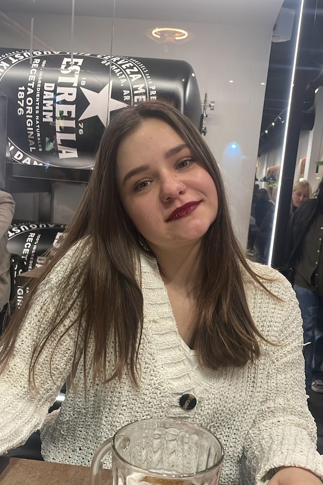

¡Hola! Soy Rylee,
Soy de Grand Rapids, Michigan y estoy estudiando en Kalamazoo College. Estudio Español, Antropología y Sociología con una especialidad secundaria en arte. Elegí ese proyecto porque quiero ayudar a que las comunidades sean más inclusivas y que sean accesibles para todos. Además, demuestra cómo el campus de Kalamazoo College puede ser inaccesible en ocasiones y promueve un cambio al respecto.
¡Hola! Soy John,
Soy de San Francisco, California. Estoy estudiando Ciencias Políticas y Estudios Internacionales. También con una especialidad secundaria en Español. Siento que el Colegio Kalamazoo enfrenta restos con respeto a la accesibilidad. Espero utilizar mis conocimientos del diseño web para ayudar y crear un sitio web informativo para estudiantes.


¡Hola! Soy Kinga.
Soy de Polonia e Irlanda, pero estudio en Kalamazoo College en Michigan. Estudio Español y Literatura en Inglés. Elegí ese proyecto porque quiero que cada persona de nuestra comunidad tenga la libertad de moverse alrededor del campus sin problemas. Ojalá que el proyecto reúna a la comunidad para lograr más accesibilidad en nuestro campus y que los estudiantes del futuro sepan la verdad sobre la accesibilidad de K College.